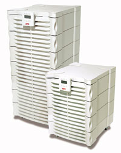
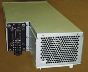
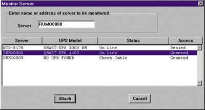

Андрей Ездаков
Компания APC (http://www.apcc.com) уже пять лет поставляет на мировой рынок различные варианты своей модульной системы Symmetra для обеспечения бесперебойного электропитания. Все эти устройства построены по принципу силового массива, разработанному специалистами APC и теперь принятому на вооружение большинством производителей источников бесперебойного питания (ИБП) средней и большой мощности.
Первая Symmetra появилась в нашей стране в конце 1997 года и предназначалась для поддержки электропитания системы информационного обеспечения выборов. В дальнейшем объем поставок силовых массивов постоянно увеличивался. Сейчас у отечественных потребителей уже установлены сотни подобных устройств, и спрос на них продолжает расти. Только за 2001 год, по данным представительства APC в России и странах СНГ, объем продаж оборудования этого семейства в странах СНГ увеличился в 2,5 раза.
Интерес к модульной системе поддержки электропитания не случаен. В последние годы на ИТ-рынке сложилась парадоксальная ситуация. Надежность и производительность вычислительных и коммуникационных систем значительно выросли за счет повсеместного внедрения новых технологий. Многие компоненты корпоративных информационных систем обладают свойствами масштабируемости и избыточности: это устройства для хранения данных, процессоры и модемы, концентраторы и маршрутизаторы.
В результате самым ненадежным звеном современной информационной системы оказался обычный ИБП средней мощности, не обладающий никакой избыточностью и в результате выходящий из строя чаще, чем любой другой компонент. А, как известно, работоспособность сложной системы в целом определяется надежностью ее самого слабого звена.
Поэтому появление на рынке новых устройств для защиты электропитания сетей, получивших название силовых массивов, в которых используется модульная RAID-технология, привлекло внимание пользователей. Теперь и ИБП приобрели масштабируемость и избыточность, перестав быть слабым местом в корпоративной информационной системе. Первыми подобными устройствами стали силовые массивы семейства Symmetra компании APC (рис. 1).
|  | Рис. 1. Больше Symmetra, хороших и разных.
|
По мнению специалистов компании, к устройству, обеспечивающему защиту электропитания информационных систем, в которых функционируют критические бизнес-приложения, предъявляются четыре основных требования: масштабируемость; избыточность; удобство эксплуатации и надежность в работе.
Силовой массив Symmetra, построенный по модульному принципу, отвечает этим требованиям. Все его активные элементы вынесены из корпуса и выполнены в виде отдельных блоков. В состав Symmetra входят силовые модули, батареи и модули управления.
Избыточность типа N+1, реализованная в Symmetra, поднимает надежность работы ИБП до уровня 99,999% и практически полностью устраняет риск простоя информационной системы предприятия. Избыточность достигается путем установки одного дополнительного силового модуля. В результате при выходе любого модуля из строя другие берут на себя поддержание нагрузки без снижения мощности. Подобным же образом резервируются и модули управления комплексом.
Возможность подключения дополнительных стоек с модулями батарей увеличивает время функционирования системы без внешнего энергоснабжения. Средства внешней коммуникации, специальные устройства и ПО позволяют настраивать работу силового массива в различных режимах, причем удаленным способом.
Простота поддержки работоспособности силового массива снижает эксплуатационные расходы. Symmetra может обслуживаться силами самих пользователей, либо заключается договор на сопровождение комплекса с третьей стороной. Основа для быстрой и качественной замены вышедших из строя модулей заложена в простоте конструкции устройства, не требующей специального высококвалифицированного персонала.
Новичок в семействе SymmetraКомпания APC анонсировала выпуск нового силового массива семейства Symmetra. Устройство, предназначенное для размещения в стойке, называется RM 8-12 kVA N+1 и с этой весны доступно российским пользователям. Как явствует из названия, силовой массив имеет номинальную выходную мощность 8-12 кВ.А с резервированием N+1 или 16 кВ.А без резервирования. По спецификации производителя устройство имеет артикул SYP8K12RMI или SYP12K12RMI, в зависимости от комплектации. Новая Symmetra представляет собой оптимизированный для монтажа в стойке силовой массив высотой 15U и массой 162,5 или 205 кг.
|
Силовые модули
Каждый силовой модуль, по сути, представляет собой ИБП мощностью 4 кВ.А без батарей. Встроенный микропроцессор обеспечивает передачу необходимых данных в случае выхода элементов модуля из строя, независимо от состояния других модулей.
Рассмотрим подробнее другие компоненты силового модуля, как обеспечивающие его нормальную работу, так и выполняющие свои функции в критических ситуациях.
Корректор входного коэффициента мощности (КМ) во-первых, предохраняет силовой модуль от передачи искажений импульсной нагрузки на входное напряжение; во-вторых, минимизирует реактивные составляющие мощности во входной сети путем контроля фазового сдвига напряжения и тока на выходе и последующей коррекции входного коэффициента мощности.
Входной фильтр обеспечивает фильтрацию импульсной входной помехи в соответствии с тремя основными европейскими стандартами для подобных устройств. Устойчивость к высоковольтному воздействию - регулируется стандартом IEC 1000-4-3, допускающим пропускание не более 10% от входного импульсного воздействия напряжением до 6 кВ. Устойчивость к периодическому высоковольтному воздействию должна отвечать стандарту IEC 801-4 level 4, в соответствии с которым подавляются все электрические импульсы амплитудой до 2 кВ и длительностью до 15 мс, следующие с интервалом не менее 300 мс. Устойчивость к электростатическому разряду регулируется стандартом IEC 801-2 level 4, требующим обеспечения защиты от разряда статического электричества с напряжением до 8 кВ.
Специалисты APC утверждают, что входная фильтрация импульсных помех в силовых блоках массива Symmetra осуществляется в полном соответствии с нормативами, указанными в стандартах. Естественно, никакое электронное устройство не может быть полностью и абсолютно защищено от внешних электромагнитных воздействий. Поэтому у заказчика имеют место специальные, особо сложные условия эксплуатации системы, разумно будет использовать на входе отдельное мощное фильтрующее устройство.
Необходимый компонент для правильной работы инвертора силового модуля - выходной фильтр. Входное и выходное реле нужны для отключения силового модуля от общей шины при его неисправности. Они же отвечают за переключение режимов работы модуля - от батареи или от внешней сети, в зависимости от состояния внешнего электропитания.
Важнейший элемент каждого силового модуля массива - зарядное устройство (ЗУ) с автоматической регулировкой напряжения и силы тока, учитывающей температуру и влажность окружающей среды, для ускорения процесса подзарядки. Мощность ЗУ - 300 Вт, т. е. при напряжении 120 В сила тока равна 2,5 А. Поскольку при зарядке батарей рекомендуемая сила тока должна составлять 10% от их емкости, а емкость батарейных модулей Symmetra - 7 А.ч, ЗУ каждого силового модуля способно одновременно обслуживать три батареи без увеличения времени их зарядки.
Иными словами, если силовой массив оснащен дополнительными стойками с батарейными модулями, общее количество которых в три раза больше числа силовых модулей, то время восстановления заряда в батареях будет точно таким, как и в случае стандартной комплектации.
Кроме того, силовой модуль содержит выпрямитель и высокочастотный ШИМ-инвертор на базе IGBT-транзисторов.
Силовой модуль Symmetra - трехфазный по входу и обеспечивает однофазный выход 200/208/220/230/240 В от входного напряжения сети в 155-276 В переменного тока или 120 В постоянного тока батарей. Возможна долговременная эксплуатация устройства и при "пропадании" или изначальном отсутствии одной из фаз. Впрочем, производитель не рекомендует долго использовать его в подобном режиме.
Силовой модуль имеет встроенную схему управления, благодаря которой автоматически переключается в режим работы от батарей или входной сети и подключается к выходной шине питания без дополнительных внешних сигналов. Кроме того, все эти модули принимают сигнал синхронизации Current Share через шину передачи данных IIC от основного и резервного модулей управления (MIM и RIM соответственно) для обеспечения равномерного распределения нагрузки.
Каждый силовой модуль оснащен специальным "плавающим" разъемом на задней стенке (рис. 2), который автоматически центрируется и попадает в соответствующее гнездо, расположенное на корпусе Symmetra. Благодаря этому упрощается процесс горячей замены модуля при выходе его из строя. Этому же способствует и его небольшая масса - 13 кг, и специальная система размещения на своеобразном шасси с помощью лишь одного фиксатора.
|  | Рис. 2. "Плавающий" разъем силового модуля.
|
При подключении в качестве нагрузки некоторых электронных устройств может кратковременно возникать очень высокий, так называемый "стартовый" ток. Силовые модули созданы с таким расчетом, чтобы некоторое время выдерживать эти перегрузки (таблица).
Длительность бесперебойной работы силовых модулей в режиме перегрузки
| Уровень нагрузки, % | Время работы |
| 200 | 5 с |
| 150 | 30 с |
| 125 | 10 мин |
| 105 | Продолжительное время |
В зависимости от корпуса модели Symmetra в ней может быть установлено одновременно до пяти силовых модулей, причем один из них - избыточный (реализует схему резервирования компонент - RAID 5). Естественно, при меньших потребностях в мощности электропитания пользователь может вначале приобрести силовой массив, например, с двумя силовыми модулями. Тем самым клиент избежит лишних финансовых затрат, а при расширении своей информационной инфраструктуры и росте энергопотребления просто докупит необходимое количество силовых модулей и вставит их в тот же корпус на свободные места.
Следует отметить, что все силовые модули работают параллельно как на выходную шину питания, так и на общую шину постоянного тока, через которую осуществляется их взаимодействие с модулями батарей. Такая схема работы называется горячим резервированием. При выходе из строя одного модуля время включения резерва равно нулю, поскольку оставшиеся в нормальном состоянии модули продолжают работать в том же режиме, что и прежде. В результате компоненты нагрузки практически не ощущают никаких перебоев в подаче электроэнергии.
Модули батарей
В силовом массиве Symmetra имеются модули батарей, обеспечивающие необходимое время работы при отсутствии внешнего электропитания. Каждый из них состоит из десяти параллельно подключенных необслуживаемых герметичных свинцово-кислотных элементов с выходным напряжением 12 В и емкостью 7 А.ч. Они создают номинальное выходное постоянное напряжение 120 В.
В состав модуля батарей входит также датчик для измерения температуры и предохранитель для защиты общей шины постоянного тока силового массива от последствий внутренних неисправностей в блоке, например, короткого замыкания. Все модули постоянно раздельно контролируются блоком управления.
Модули батарей массой 30 кг так же, как и силовые модули, оснащены плавающим разъемом, который облегчает процедуру замены неисправного модуля в горячем режиме. В различных вариантах корпусов Symmetra устанавливается до четырех таких модулей.
Если условия эксплуатации электрооборудования таковы, что информационная система периодически должна довольно долго работать без внешнего энергоснабжения, то можно доукомплектовать силовой массив дополнительными батарейными стойками. Два варианта их исполнения вмещают четыре или 12 батарейных модулей и могут подключаться к Symmetra в горячем режиме. Однако, учитывая время, необходимое на заряд аккумуляторов, специалисты APC рекомендуют заказчикам устанавливать автономный генератор, если перерывы в энергоснабжении происходят регулярно и продолжаются более часа.
Модули управления
Главный управляющий модуль (MIM) - мозговой центр системы Symmetra. Он обеспечивает связь с внешними устройствами и синхронизацию всех остальных модулей. Запасной управляющий модуль (RIM) представляет собой резервный мозговой центр и обеспечивает отказо- и помехоустойчивость комплекса. Оба компонента размещаются в едином корпусе и так же, как и другие модули, допускают замену в горячем режиме.
Главный управляющий модуль силового массива - это сложное электронное устройство, выполняющее все функции контроля состояния Symmetra и управления различными режимами работы. При запуске ИБП MIM проводит начальную инициализацию и определяет конфигурацию, в которой исполнен данный силовой массив. После этого Symmetra выводится на рабочий режим поддержки стабильного электропитания полезной нагрузки.
В процессе эксплуатации силового массива главный управляющий модуль постоянно выполняет диагностику системы и координирует работу всех остальных модулей. Важнейшая "забота" MIM - регулирование нагрузки на каждый отдельный силовой модуль. Более десяти тысяч раз в секунду он проверяет выходную мощность Symmetra и уровни нагрузки силовых модулей. При заметных отклонениях от средних значений главный силовой модуль перераспределяет нагрузку между силовыми модулями. Сигналы синхронизации передаются по стандартной шине передачи данных IIC.
Кроме того, MIM постоянно и не менее часто контролирует состояние модулей батарей, каждого в отдельности, и режим работы силового массива - online, обходной режим (Bypass), автономный. В его функции входит и организация всех внешних коммуникаций системы, для чего силовой массив оснащен COM-портом и четырьмя разъемами Smart Slot. К этим гнездам подключаются различные внешние устройства, обеспечивающие полную прозрачность работы с силовым модулем при удаленном управлении, контроль параметров окружающей среды и т. д.
К внешним коммуникациям главного модуля управления относится и панель управления PowerView. На небольшом ЖК-экране этого устройства постоянно отражаются результаты диагностики системы. Панель может быть настроена на работу с различными языками, в том числе и русским, и может располагаться как непосредственно в зале, где установлен силовой массив, так и в отдалении от него, на расстоянии до 250 м. PowerView можно заменять в горячем режиме.
Сам главный управляющий модуль Symmetra тоже заменяется в горячем режиме, но только при условии, что имеется работоспособный резервный модуль управления, или при работе силового массива в обходном режиме.
Резервный управляющий модуль, постоянно находящийся в горячем режиме, - не точная копия главного. Он лишен части функциональности и потому устроен значительно проще. Как следствие, надежность его значительно выше, чем у главного управляющего модуля. И если MIM выходит из строя, то RIM сразу же "подхватывает" выполнение большей части его задач, не допуская перерыва в управлении и контроле за работой силового массива.
В отличие от главного резервный управляющий модуль не может осуществить начальную инициализацию системы. В нем отсутствуют и средства контроля за изменением конфигурации Symmetra. RIM не поддерживает дополнительные средства коммуникации с внешними устройствами через Smart Slot. Поэтому режим работы комплекса с неисправным MIM все же следует считать ограниченным, и при выходе главного управляющего модуля из строя необходимо принять меры к его скорейшей замене.
Такие функции, как выполнение критических операций, например, автоматический переход в обходной режим, выключение при разряде батарей, регулировка напряжения и равномерное распределение нагрузки между силовыми модулями резервный модуль управления выполняет в полном объеме. Поэтому электроснабжение полезной нагрузки все равно будет происходить нормально.
Как и главный управляющий модуль, RIM можно заменять в горячем режиме только в двух случаях: при наличии работоспособного MIM или при работе силового массива в обходном режиме.
Аксессуары
Основные модули силового массива размещаются в специальном шкафу со встроенной системой распределения питания, выведенного на две группы из 4 розеток, каждая из которых рассчитана на ток до 10 А и снабжена собственным автоматом для отключения при перегрузке. Основные модули присутствуют в Symmetra любой конфигурации (меняется только количество силовых и батарейных модулей). Кроме того, силовой массив в зависимости от поставки может содержать разнообразные дополнительные устройства и ПО (рис. 3).
|  | Рис. 3. Специальное ПО позволяет контролировать работу нагрузки.
|
Сейчас все поставляемые на рынок модели Symmetra комплектуются специальной платой администрирования системы Web/SNMP Management Card (производства компании APC). Это устройство обеспечивает пользователям силового массива встроенные средства администрирования системы поддержки электропитания через Интернет, по протоколам SNMP или Telnet.
Web/SNMP Management Card реализует широкий спектр функций дистанционного мониторинга, управления и конфигурирования на основе протоколов, опирающихся на известные отраслевые стандарты. При продолжительном отсутствии напряжения в сети питания она обеспечивает автоматическое корректное завершение работы вычислительных комплексов, взаимодействуя с ними через локальную сеть (при условии, что на них установлено ПО PowerChute Network Shutdown).
Распределительная панель MasterSwitch, также выпускаемая компанией APC, предоставляет администратору системы дистанционный контроль над электропитанием всего компьютерного оборудования корпоративной сети. Управление устройством происходит через сеть с использованием тех же протоколов HTTP, SNMP и Telnet.
Панель MasterSwitch предназначена для управления отдельными каналами нагрузки, например, набором серверов информационной системы. Чтобы избежать высоких "стартовых" токов (за счет того, что сразу включается много электронного оборудования), MasterSwitch позволяет организовать плавный запуск системы, в частности, путем задания приоритетов для всех устройств сети. Примерно таким же образом с ее помощью организуется определенная последовательность запуска устройств. Например, сначала нужно загрузить серверы, а уже потом, с необходимой задержкой, коммуникационные устройства, которые автоматически распознают и определят работающие в стабильном режиме компьютеры.
Плата Out-of-band Management Card применяется вместе с внешним модемом для управления силовым массивом Symmetra по отдельному коммуникационному каналу. С ее помощью через модемную линию связи можно удаленно перезагрузить "зависшее" устройство. Кроме того, она позволяет контролировать состояние ИБП, диагностировать его неисправности и менять параметры конфигурации в случае отсутствия связи по компьютерной сети, т. е. создает дополнительный (возможно, резервный) канал управления комплексом.
Все эти и другие дополнительные устройства, устанавливаемые в разъемы Smart Slot, могут подключаться к комплексу поддержки электропитания информационной системы и заменяться в горячем режиме.
Программный продукт PowerChute Network Shutdown обеспечивает взаимодействие компьютеров и коммуникационных устройств информационной сети с силовым массивом. При снижении заряда батарей ниже определенного предела и отсутствии внешнего электропитания это ПО организует автоматическое нормальное завершение работы сетевых устройств. В комплект поставки приложения входят его модификации для основных ОС: Microsoft Windows NT/2000, Novell NetWare, AIX, Sun Solaris, HP-UX и Linux. Версии для ряда других ОС можно найти на Web-сайте компании APC.
Symmetra в России
Силовой массив используется сейчас на многих крупных государственных и частных предприятиях и организациях России. Как упоминалось выше, первая Symmetra в нашей стране предназначалась для поддержки электропитания системы информационного обеспечения выборов.
Критичность бизнес-процессов в тех учреждениях и организациях, где необходим круглосуточный режим работы, влечет за собой необходимость силовых массивов. Очень чувствительны к перебоям информационно-расчетные системы поддержки финансовой деятельности. Поэтому одними из основных заказчиков Symmetra становятся российские банки. Большинство региональных расчетно-кассовых центров (РКЦ) ЦБ России оснащено такими устройствами. Энергоснабжение управления системой дилинга драгоценных металлов ЦБ России также поддерживается силовым массивом Symmetra мощностью 16 кВ.А.
Важно обеспечить бесперебойное электропитание и для серьезных научных исследований, где используются мощные суперкомпьютеры. Поэтому Российская академия наук также стала клиентом компании APC. ИБП Symmetra - основной компонент системы защиты электропитания отечественного суперкомпьютера МВС1000М.
Этот суперкомпьютер имеет иерархическую блочную структуру. Его базовая единица - двухпроцессорные вычислительные модули, собираемые по 20-22 штуки в вычислительные блоки с потребляемой мощностью 8 кВт, которые, в свою очередь, объединяются по 64 в базовые блоки.
Энергоснабжение каждого вычислительного блока поддерживается собственным ИБП. Модульная конструкция Symmetra с внутренними возможностями резервирования хорошо вписалась в концепцию построения суперкомпьютера с высокой устойчивостью к сбоям и отказам. Выход из строя любого компонента ИБП не приводит к отказу или останову всей системы и позволяет устранить неисправность без остановки комплекса. Кроме того, сетевые аппаратные средства и ПО от APC позволили создать управляющую программу для удаленного мониторинга и управления всей системой бесперебойного электропитания МВС1000М.